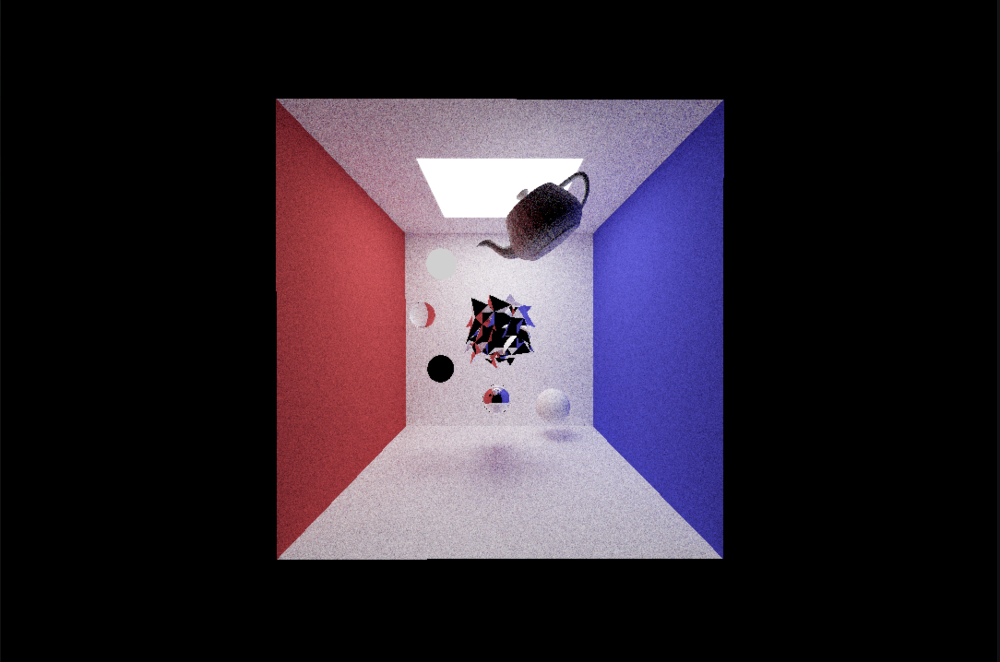

I implemented multiple features, including fundamental rasterization, geometry processing, ray tracing, and animation based on the Scotty3D framework as homework of the course 15-462 Computer Graphics.

Here's a cool image generated using ray-tracing.
Spring 2022.
I wrote a binary tree which is generated recursively using Javascript as part of a mini homework of the course 15-462 Computer Graphics.
Look how beautiful the tree is.
Spring 2022.
I wrote a cache simulator, a malloc, a shell, and a proxy using C as course labs for the course 18-213 Introduction to Computer Systems.
They passed all test cases.
Fall 2021.
I wrote a virtual machine for the language C0 in C as a project for the course 15-122 Principles of Imperative Computation.
The C0 Virtual Machine supports stack manipulation, arithmetic instructions, constants, local variables, assertions and errors, control flow, functions, memory allocation, load, and store, generic pointers, and function pointers.
Summer 2021.
I created a music game called Note Dance! as my term project for the course 15-112 Fundamentals of Programming and Computer Science.
It is my first game created using Python.
Fall 2020.